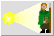
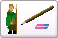
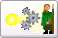
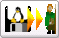
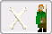

|  |
Einen neuen Abenteurer mit MAGUS erstellen:
MAGUS startet auf der Seite GRundwerte, bereit, einen neuen Abenteurer zu generieren. |
|  |
Einen vorhandenen Abenteurer in MAGUS eingeben:
Ein bereits existierender Abenteurer kann in MAGUS eingegeben werden, hierzu werden die
notwendigen Optionen in MAGUS eingestellt. |
|  |
Einen Zufallsabenteurer (Grad 1) erstellen:
MAGUS startet mit dem Zufallsgenerator |
|  |
Einen Abenteurer aus einer Datei laden:
Der Fileselector wird beim Start von MAGUS automatisch aufgerufen. |
|  |
Dieses Fenster beim nächsten Start wieder anzeigen:
Ist dieser Button aktiv (default), so wird dieses Fenster beim Start von MAGUS
geöffnet.
|